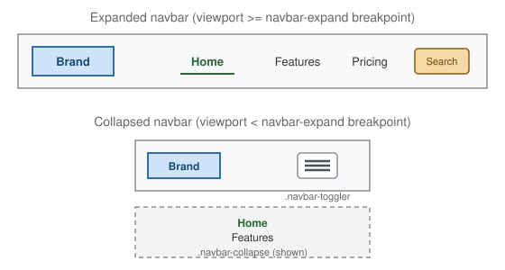

Navigation Components
|
This content was generated with the assistance of AI and should be verified against the official documentation before being relied on in production. |
Bootstrap groups three distinct navigation patterns under this page: the navbar, which sits at the top (or bottom) of a page and holds primary site navigation; breadcrumbs, a small trail showing the user’s location within a hierarchy; and pagination, a control for moving between pages of a list. All three are built from plain markup plus classes — none require JavaScript on their own, though the navbar’s collapse behavior does (covered below).
Navbar
Anatomy
A navbar is a <nav class="navbar"> wrapping a brand, a toggler button (for small screens), and a collapsible
container holding the actual nav links:

<nav class="navbar navbar-expand-lg navbar-light bg-light">
<div class="container-fluid">
<a class="navbar-brand" href="#">Brand</a>
<button class="navbar-toggler" type="button" data-bs-toggle="collapse"
data-bs-target="#main-nav" aria-controls="main-nav"
aria-expanded="false" aria-label="Toggle navigation">
<span class="navbar-toggler-icon"></span>
</button>
<div class="collapse navbar-collapse" id="main-nav">
<ul class="navbar-nav me-auto mb-2 mb-lg-0">
<li class="nav-item">
<a class="nav-link active" aria-current="page" href="#">Home</a>
</li>
<li class="nav-item">
<a class="nav-link" href="#">Features</a>
</li>
<li class="nav-item">
<a class="nav-link" href="#">Pricing</a>
</li>
</ul>
<form class="d-flex" role="search">
<input class="form-control me-2" type="search" placeholder="Search" aria-label="Search">
<button class="btn btn-outline-success" type="submit">Search</button>
</form>
</div>
</div>
</nav>navbar-expand-lg is the breakpoint at which the navbar switches from its collapsed (mobile) layout to its
expanded (desktop) layout — below lg, the .navbar-collapse container is hidden and only the brand and
toggler button show; at lg and above, .navbar-collapse is always visible and the toggler disappears.
Bootstrap ships .navbar-expand-{sm,md,lg,xl,xxl} for every grid breakpoint, plus a bare .navbar-expand that
never collapses at all.
Color schemes
Bootstrap 5.3’s text-color scheme for a navbar is set with the data-bs-theme attribute, not a
.navbar-light/.navbar-dark class pair — both classes still exist for backward compatibility but are
deprecated as of 5.2.0 and emit no CSS in 5.3 (the entire .navbar-light rule set is a deprecation warning, with
nothing behind it). Light text is the default, so data-bs-theme="dark" is the one attribute that actually
needs adding, on the .navbar itself or an ancestor, whenever it sits on a dark background — independently of
what actually produces that background (a .bg-* utility or a custom color):
<nav class="navbar bg-light">...</nav> <!-- light text is the default -->
<nav class="navbar bg-primary" data-bs-theme="dark">...</nav>
<nav class="navbar bg-dark" data-bs-theme="dark">...</nav>
<nav class="navbar" data-bs-theme="dark" style="background-color: #1a1a2e;">...</nav>Forgetting data-bs-theme="dark" on a dark-background navbar renders dark text on a dark background, since the
default text scheme assumes a light one.
The toggler and the collapse
The .navbar-toggler button and the .collapse.navbar-collapse element it controls are linked through
Bootstrap’s Collapse component (see
Interactive Components for the underlying JavaScript API):
data-bs-toggle="collapse" and data-bs-target="#main-nav" wire the click, and aria-expanded/
aria-controls on the button plus a matching id on the target keep the pair accessible to assistive
technology, announcing whether the menu is currently open. .navbar-toggler-icon is an empty <span> styled
with a background-image hamburger icon — no external icon library is required.
Dropdowns and other content inside a navbar
A navbar’s <ul class="navbar-nav"> can hold ordinary nav links, but also .dropdown items (see
Interactive Components), text, and even a second <ul> on the
opposite side, using .me-auto/.ms-auto to push one group to the far edge:
<ul class="navbar-nav me-auto">
<li class="nav-item dropdown">
<a class="nav-link dropdown-toggle" href="#" role="button" data-bs-toggle="dropdown" aria-expanded="false">
Products
</a>
<ul class="dropdown-menu">
<li><a class="dropdown-item" href="#">Widgets</a></li>
<li><a class="dropdown-item" href="#">Gadgets</a></li>
</ul>
</li>
</ul>Breadcrumbs
A breadcrumb trail is an ordered list (<ol>, since order carries meaning — root to current page) with
.breadcrumb, each step wrapped in .breadcrumb-item:
<nav aria-label="breadcrumb">
<ol class="breadcrumb">
<li class="breadcrumb-item"><a href="/">Home</a></li>
<li class="breadcrumb-item"><a href="/library">Library</a></li>
<li class="breadcrumb-item active" aria-current="page">Data</li>
</ol>
</nav>The separator between items (a / by default) is generated purely with CSS content on .breadcrumb-item::before, so it is never present in the actual text read by a screen reader; it can be restyled per-theme with
the --bs-breadcrumb-divider CSS variable:
.breadcrumb {
--bs-breadcrumb-divider: ">";
}Two structural details matter for accessibility: the wrapping <nav aria-label="breadcrumb"> identifies the
whole trail as a navigation landmark distinct from the main navbar, and .active plus aria-current="page" on
the final, current-page item — which should not be a link, since navigating to the current page is meaningless — tells assistive technology which step represents "here".
Pagination
Pagination renders a row of page links, built the same way as breadcrumbs — a semantic list wrapped in a
<nav aria-label="..."> landmark:
<nav aria-label="Search results pages">
<ul class="pagination">
<li class="page-item disabled">
<a class="page-link" href="#" tabindex="-1" aria-disabled="true">Previous</a>
</li>
<li class="page-item active" aria-current="page">
<a class="page-link" href="#">1</a>
</li>
<li class="page-item"><a class="page-link" href="#">2</a></li>
<li class="page-item"><a class="page-link" href="#">3</a></li>
<li class="page-item">
<a class="page-link" href="#">Next</a>
</li>
</ul>
</nav>.page-item.active marks the current page (again paired with aria-current="page"), and .page-item.disabled
marks a link that cannot currently be activated — typically "Previous" on page 1 or "Next" on the last page.
tabindex="-1" and aria-disabled="true" on a disabled .page-link are both necessary: .disabled alone is
only a visual style (a link element has no native disabled attribute the way a <button> does), so without
them the link would still be focusable and clickable by keyboard.
Sizing follows the same -sm/-lg pattern as buttons and form controls, and .justify-content-* utilities
(see Layout: Float, Flexbox & Grid) center or right-align the whole list:
<ul class="pagination pagination-lg justify-content-center">
<li class="page-item"><a class="page-link" href="#">1</a></li>
<li class="page-item"><a class="page-link" href="#">2</a></li>
</ul>Navbar placement and scrolling
A navbar sits in the normal flow by default. .fixed-top and .fixed-bottom (z-index 1030) pin it to the viewport
edge, which removes it from the flow, so the <body> needs matching padding, typically
body { padding-top: 56px; } for a default one-line navbar. .sticky-top (z-index 1020) is the gentler alternative:
the navbar stays in the flow and sticks when the page scrolls past it, and needs no body padding. The layout helpers
page lists the z-index values in Layout Helpers. For a navbar with many links
in its expanded state, .navbar-nav-scroll plus a --bs-scroll-height value (for example
style="--bs-scroll-height: 100px;") lets the list scroll vertically instead of overflowing; it only matters when
the links stack, so it is mostly used with a collapsed menu. .navbar-text styles non-link text such as a user name,
and a .container (or .container-fluid) inside the .navbar decides whether the content spans the full width.
Navs, tabs and pills
The .nav component is the base of tabs, pills and the navbar’s own link list. It is a flex container that works on
<ul>, <nav> or <div>, and the modifiers change how the links look:
| Class | Effect |
|---|---|
|
A bottom border with the active link drawn as a tab that merges with the content below it. |
|
The active link is a filled, rounded rectangle. |
|
Bootstrap 5.3: an underline marks the active link, with no background. |
|
Links grow to fill the available width in proportion to their content. |
|
Links get equal widths. |
|
A vertical nav (a flexbox utility, see Utilities); add |
On their own these are plain links. Adding data-bs-toggle="tab" (or "pill") turns each link into a control for a
.tab-pane in a sibling .tab-content, and the Tab plugin then manages the rest:
<ul class="nav nav-tabs" id="product-tabs" role="tablist">
<li class="nav-item" role="presentation">
<button class="nav-link active" id="tab-desc" data-bs-toggle="tab" data-bs-target="#pane-desc"
type="button" role="tab" aria-controls="pane-desc" aria-selected="true">Description</button>
</li>
<li class="nav-item" role="presentation">
<button class="nav-link" id="tab-specs" data-bs-toggle="tab" data-bs-target="#pane-specs"
type="button" role="tab" aria-controls="pane-specs" aria-selected="false">Specs</button>
</li>
</ul>
<div class="tab-content">
<div class="tab-pane fade show active" id="pane-desc" role="tabpanel" aria-labelledby="tab-desc" tabindex="0">
Hot-swappable switches and an aluminium frame.
</div>
<div class="tab-pane fade" id="pane-specs" role="tabpanel" aria-labelledby="tab-specs" tabindex="0">
USB-C, 1000 Hz polling.
</div>
</div>When a tab is activated the plugin removes .active and sets aria-selected="false" and tabindex="-1" on the
previous tab, sets .active, aria-selected="true" and removes the tabindex on the new one (so only the
selected tab is in the page’s Tab order, the "roving tabindex" pattern from the WAI-ARIA tabs design), and swaps
.show.active on the panes with the fade. The arrow keys move between tabs. The tab events are show.bs.tab,
shown.bs.tab, hide.bs.tab and hidden.bs.tab; the relatedTarget of hide/hidden is the tab being
activated, and that of show/shown is the tab being left. The order is hide, show, hidden, shown.
import { Tab } from "bootstrap";
document.getElementById("tab-specs").addEventListener("shown.bs.tab", (event) => {
// load the specs lazily the first time the tab is shown
console.log("left:", event.relatedTarget.id); // tab-desc
});
Tab.getOrCreateInstance(document.getElementById("tab-specs")).show(); // activate from codeChoosing and combining navigation components
(navbar-expand-* for the collapse breakpoint)"] CRUMB["Breadcrumb
(nav aria-label + ol)"] PAGE["Pagination
(nav aria-label + ul)"] TABS["Nav tabs or pills
(Tab plugin)"] Q1 --> SITE --> NAVBAR Q1 --> HERE --> CRUMB Q1 --> LIST --> PAGE Q1 --> SWITCH --> TABS
All four are landmarks or lists that deserve an accessible name. A page can legitimately hold several <nav>
elements (the navbar, the breadcrumb and the pagination), and each one needs a distinct aria-label so a screen
reader’s landmark list tells them apart. Tab controls are the exception: they are not <nav> landmarks, they use
role="tablist".
A navbar that opens an offcanvas menu
For a mobile menu that slides in from the side, put an .offcanvas inside the navbar instead of a .collapse.
Bootstrap’s navbar-expand-* classes restyle the offcanvas so that it is an ordinary inline layout from the expand
breakpoint upward:
<nav class="navbar navbar-expand-lg bg-body-tertiary sticky-top">
<div class="container-fluid">
<a class="navbar-brand" href="/">Catalog</a>
<button class="navbar-toggler" type="button" data-bs-toggle="offcanvas"
data-bs-target="#nav-offcanvas" aria-controls="nav-offcanvas" aria-label="Toggle navigation">
<span class="navbar-toggler-icon"></span>
</button>
<div class="offcanvas offcanvas-end" tabindex="-1" id="nav-offcanvas" aria-labelledby="nav-offcanvas-title">
<div class="offcanvas-header">
<h5 class="offcanvas-title" id="nav-offcanvas-title">Menu</h5>
<button type="button" class="btn-close" data-bs-dismiss="offcanvas" aria-label="Close"></button>
</div>
<div class="offcanvas-body">
<ul class="navbar-nav ms-auto">
<li class="nav-item"><a class="nav-link active" aria-current="page" href="/products">Products</a></li>
<li class="nav-item"><a class="nav-link" href="/orders">Orders</a></li>
</ul>
</div>
</div>
</div>
</nav>Below lg the toggler opens the drawer with the Offcanvas plugin (events show.bs.offcanvas,
shown.bs.offcanvas, hide.bs.offcanvas, hidden.bs.offcanvas); from lg upward the toggler is hidden and the
offcanvas body is laid out inline in the bar.
Deep dive: paging through the product catalog
A real pagination component is generated, because the page list depends on the number of results. Showing every page number stops working at a few dozen pages, so the usual rule is: always show the first and last page, the current page and one neighbor on each side, and an ellipsis for each gap. The function below returns the list of page entries, and a second function renders it with the Bootstrap classes and ARIA attributes from the pagination section. The ellipsis is a disabled item hidden from assistive technology, and "Previous"/"Next" are disabled at the ends:
function pageItems(current, total, siblings = 1) {
const pages = new Set([1, total]);
for (let p = current - siblings; p <= current + siblings; p++) {
if (p >= 1 && p <= total) pages.add(p);
}
const sorted = [...pages].sort((a, b) => a - b);
const items = [];
sorted.forEach((page, index) => {
if (index > 0 && page - sorted[index - 1] > 1) items.push("gap");
items.push(page);
});
return items;
}
function renderPagination(current, total, hrefFor = (p) => `?page=${p}`) {
const item = (label, { page, disabled = false, active = false, aria } = {}) => {
const classes = ["page-item", disabled ? "disabled" : "", active ? "active" : ""].filter(Boolean).join(" ");
const attrs = disabled ? ' tabindex="-1" aria-disabled="true"' : "";
const href = disabled || page === undefined ? "#" : hrefFor(page);
const ariaCurrent = active ? ' aria-current="page"' : "";
const labelAttr = aria ? ` aria-label="${aria}"` : "";
return `<li class="${classes}"><a class="page-link" href="${href}"${attrs}${ariaCurrent}${labelAttr}>${label}</a></li>`;
};
const parts = [item("Previous", { page: current - 1, disabled: current === 1 })];
for (const entry of pageItems(current, total)) {
if (entry === "gap") {
parts.push('<li class="page-item disabled" aria-hidden="true"><span class="page-link">…</span></li>');
} else {
parts.push(item(String(entry), { page: entry, active: entry === current, aria: `Page ${entry}` }));
}
}
parts.push(item("Next", { page: current + 1, disabled: current === total }));
return `<nav aria-label="Product pages"><ul class="pagination">${parts.join("")}</ul></nav>`;
}For ten pages of results the entries are:
| Current page | Entries |
|---|---|
1 |
1, 2, gap, 10 |
5 |
1, gap, 4, 5, 6, gap, 10 |
10 |
1, gap, 9, 10 |
renderPagination(5, 10) produces the list "Previous, 1, …, 4, 5 (active), 6, …, 10, Next", and
renderPagination(1, 10) starts with a disabled "Previous" item carrying tabindex="-1" and
aria-disabled="true", matching the accessibility rule from the pagination section above. If the result list is
loaded without a page change (single-page application), keep the href as a real URL for crawlers and
progressive enhancement, and intercept the click in a delegated listener.
For the full set of navbar breakpoints, color utilities, and pagination sizing options, see the official Navbar docs, the official Breadcrumb docs, and the official Pagination docs.